Play12 Инструкция
Содержание
Введение
Любая музыка состоит из нот. Ноты характеризуются высотой звучания — какую клавишу нажать, длительностью — как долго её держать, и громкостью — с какой силой нажимать. Кроме того, они расположены в определённом порядке во времени. Другими словами, умение играть — это вовремя и с нужной силой нажимать, держать и отпускать нужные клавиши.
В Play12 ноты обозначаются знаками 0, 1, 2, 3, 4, 5, 6, 7, 8, 9, X, Y и цветами радуги. Запись выглядит так, чтобы сразу было видно, какую клавишу нажать, как долго её держать и когда это сделать.
Звучит легко? Не обманывайся, на практике потребуется время, чтобы движения стали точными и уверенными. Каждый урок проходит за инструментом. Каждое повторение улучшает навык игры, а результат появляется быстрее — ведь ты сразу занимаешься музыкой. Play12 — для тех, кто хочет научиться играть на пианино, играя на пианино.
Учебный материал Play12 разделён на две части:
Инструкция — объясняет правила игры.
Практикум — сборник упражнений для оттачивания навыков игры.
Они связаны общей системой глав: каждая глава Практикума соответствует главе Инструкции и закрепляет её на практике.
На начальном этапе понадобятся карточки. Они помогают быстро находить нужные клавиши. Ниже — ссылка на файл и инструкция по их подготовке перед началом работы.
Материал выстроен последовательно: каждый следующий Блок опирается на предыдущий. Многое может показаться очевидным. Текст можно читать быстро или медленно, возвращаться к нужным местам и пересматривать их по мере необходимости.
Сначала прочитай Блок 1 Play12: Инструкция для общего понимания. Затем переходи к Блоку 1 с Play12: Практикум. Во время занятий возвращайся к нужным разделам инструкции и повторно изучай материал. Потом Блок 2 Play12: Инструкция и Блок 2 Play12: Практикум и т.д.
И да — Play12: Инструкцию нужно читать за инструментом.
Давай играть.
Сколько всего нот?
Карточки и инструкцияБЛОК 1. ПРАВИЛА ИГРЫ.
Глава 1. В музыке всего 12 нот.
Фокус — выбери клавишу и поставь на неё мизинец левой руки. Считая эту клавишу первой, отсчитай 12 клавиш вправо и поставь на двенадцатую клавишу мизинец правой руки. В этом наборе, от мизинца до мизинца, окажется 7 белых и 5 чёрных клавиш.
Угадал? Если нет — проверь, всё ли сделано верно. Теперь выбери другую, отсчитай 12 и… Там 7 белых и 5 чёрных.
И сразу раскрою главный секрет — в музыке всего 12 нот. И на клавишах фортепиано в этом проще всего убедиться. Фортепиано — клавишный музыкальный инструмент. Клавиатура фортепиано состоит из белых и чёрных клавиш, расположенных в определённом порядке. Каждая клавиша отвечает за определённую ноту. Попробуй свой инструмент: понажимай на клавиши, почувствуй упругость нажатия и тактильные особенности. Не стесняйся пробовать — нажимай клавиши по одной, вместе, любой рукой, в любом порядке. Посмотри внимательно на клавиатуру.
Клавиш много, но они устроены одинаковыми повторяющимися группами. Посмотри на чёрные клавиши, видишь? Они расположены группами по две и по три, и этот рисунок повторяется по всей клавиатуре. Каждый набор из 12 клавиш, идущих подряд, содержит 7 белых и 5 чёрных клавиш.
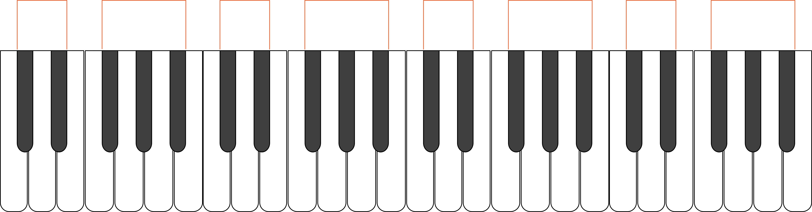
Перед ним и после него находится точно такой же набор клавиш — с тем же расположением белых и чёрных. Такой повторяющийся набор мы будем называть циклом.
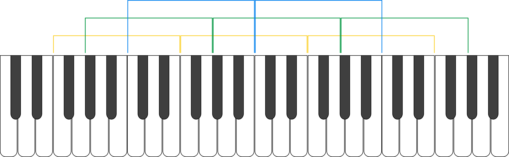
Не нужно учить названия нот. Мы работаем с циклом. Нужно уметь считать от нуля до одиннадцати. Каждая клавиша в цикле имеет своё обозначение. Эти обозначения идут по порядку — от 0 до Y:
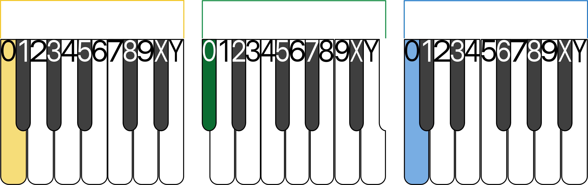
Я не использую цифры 10 и 11, потому что при беглом чтении их легко спутать: 10 — с 1 и 0, а 11 — с 1 и 1. Поэтому я решил использовать X вместо 10 и Y вместо 11. После Y порядок начинается заново. Это просто способ договориться, какую клавишу мы имеем в виду.
Как только ты понимаешь, что нот всего 12 и что они постоянно повторяются, клавиатура перестаёт казаться хаотичной. Она становится предсказуемой, а значит — удобной для игры.

Но возникает естественный вопрос — откуда начинать считать?
Какая же из клавиш будет 0?
Глава 2. Клавишу 0 выбираешь ты.
Пришло время сыграть первую мелодию.
Возьми любую карточку со знаками 0-Y и установи её в средней части клавиатуры, так чтобы было удобно играть двумя руками. 0 на твоей карточке выделен чёрным. Его можно поставить на любую клавишу.
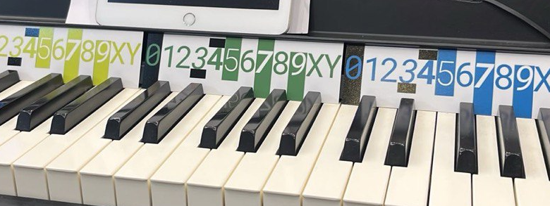
Отлично.
Теперь поставь указательный палец левой руки (У) на клавише 0, а большой (Б) на клавише 1. Пальцы правой руки расположи так: указательный (У) - 4, средний (С) - 5, безымянный (б) - 7.
Сейчас будешь играть главную тему из When The Saints Go Marching In - нажимай клавиши в следующем порядке и постарайся, чтоб первые три ноты длились одинаково, а нота 7 пусть звучит дольше:
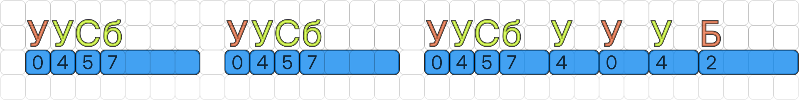
Пробуй, поиграй. Пусть мелодия звучит громче и увереннее. Не переживай, если всё не получается сразу, с каждым занятием будет всё лучше и лучше. Как почувствуешь уверенность, передвинь карточку цикла на 7 клавиш вправо.
Теперь сыграй ту же мелодию ещё раз.
Стало получаться без ошибок, передвинь цикл ещё на клавишу вправо. Поиграй теперь с этим нулем. И теперь только правой, М - мизинец:
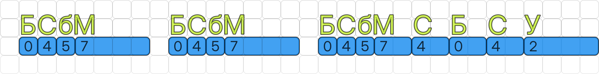
И ещё один вариант 0 - сдвинь цикл на 5 клавиш влево. Ты уже знаешь, что делать. Только левой.
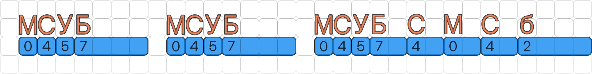
0 - главная нота: точка отсчёта для мелодии.
0 - нота, с которой часто начинается музыка и к которой она стремится вернуться.
И самое важное:
0 — это нота, которую выбираешь ты. При желании её можно легко поменять.
Выбери любую клавишу из первых 12. Поставь на неё карточку так, чтобы знак 0 оказался над этой клавишей. Если на твоём инструменте больше 61 клавиши, начинай с красного цикла. Если 61 или меньше — начинай с оранжевого. Дальше раскладывай карточки по порядку цветов радуги, одну за другой, пока они помещаются на клавиатуре.
Если 0 известен, то любую клавишу можно обозначить цветом и знаком - и сразу понятно, о какой идёт речь. Теперь тебе предстоит узнать, сколько времени держать клавишу нажатой и когда её отпускать.
Глава 3. Длина блока = длительность ноты.
Включи музыку, которая тебе нравится. Встань, двигайся в ритме. В танце это проще сделать интуитивно. Добавь хлопки. Сядь за инструмент. Продолжай хлопать и считай вслух:
“РАЗ, ДВА, ТРИ, ЧЕ” (Че - это четыре)
Теперь хлопай левой рукой по ноге только без музыки. Читай счёт снизу вверх. Один хлопок — один счёт:
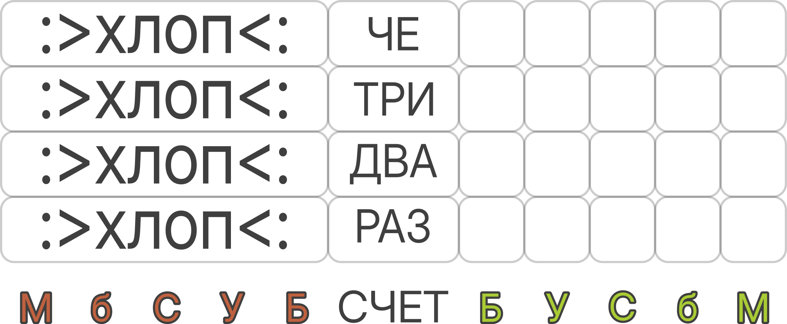
Продолжай считать вслух. На каждый хлопок левой руки, средним пальцем правой руки нажимай любую клавишу.
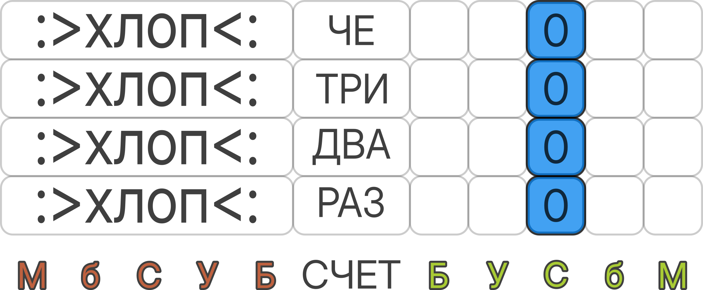
Ты играешь ноты длиной в один шаг. Шаг в Play12 — это минимальный отрезок времени, который соответствует самой короткой ноте или паузе произведения.
Смени руки:
правая задаёт счёт хлопками.
Теперь сыграй ноту длиной в два шага:
нажми на «РАЗ»
держи на «ДВА»
отпусти перед «ТРИ»
нажми на «ТРИ»
держи на «ЧЕ»
отпусти перед «РАЗ»
Повтори 12 раз, чтобы движение стало автоматическим.
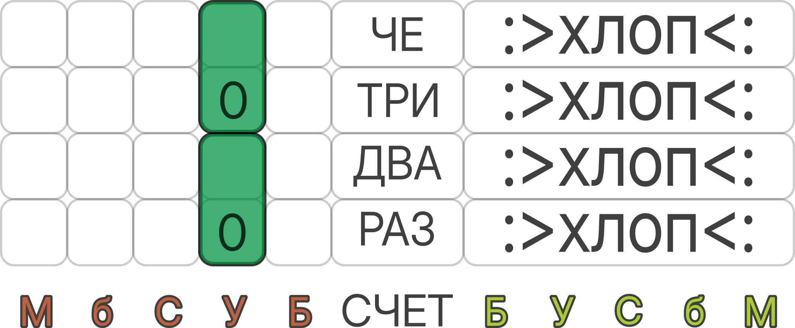
Меняем руки.
Теперь сыграй ноту длиной в три шага:
нажми на «РАЗ»
держи на «ДВА»
держи на «ТРИ»
отпусти перед «ЧЕ»
повтори 12 раз.
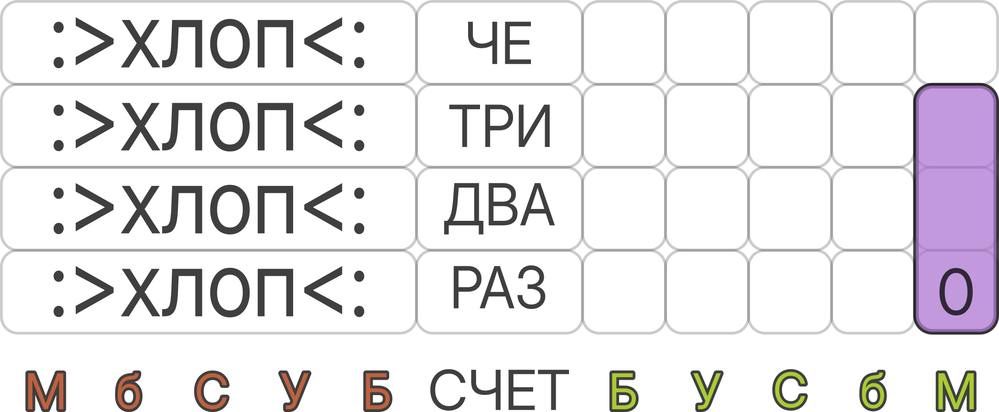
Отдельный ряд поля записи - это один шаг.
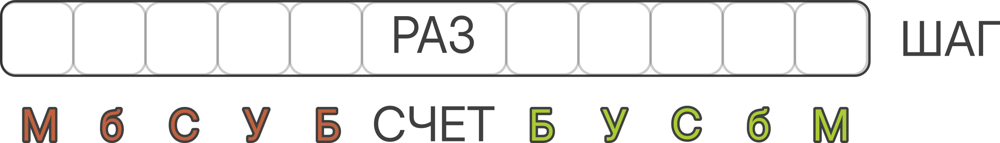
Иногда в один счет помещается несколько шагов. В таком случае между цифрами счета нужно произносить “И”.
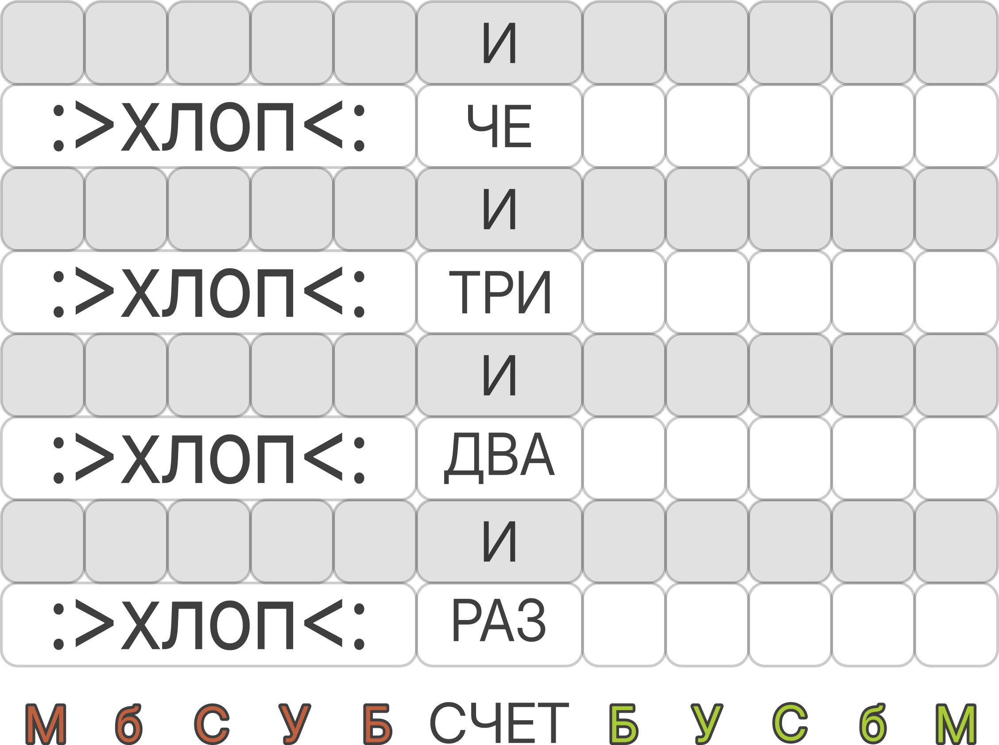
Попробуй сыграть мелодию. Поставь карточку с циклом в удобное место. Размести пальцы правой руки над клавишами:
Большой палец (Б) - 0
Указательный палец (У) - 2
Средний (С) - 4
Безымянный палец (б) - 5
Мизинец (М ) - 7
Задай удобный темп хлопками левой руки. И теперь сыграй:
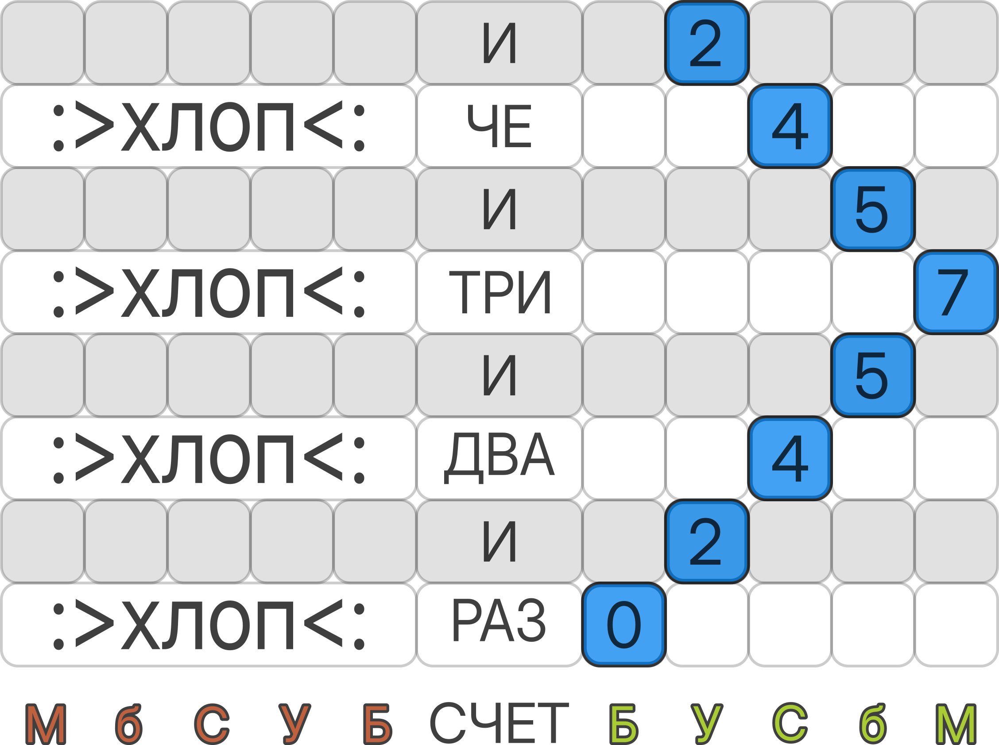
Счёт бывает разным:
РАЗ, ДВА, ТРИ
РАЗ, ДВА, ТРИ, ЧЕ
РАЗ, ДВА, ТРИ, ЧЕ, ПЯТЬ
РАЗ, ДВА, ТРИ, ЧЕ, ПЯТЬ, ШЕСТЬ
(считай вслух и хлопай только на “РАЗ”).
Группа шагов от “РАЗ” до следующего “РАЗ” - это раунд. Раунды могут быть разной длины, в зависимости от счёта:
РАЗ, ДВА
РАЗ, ДВА, ТРИ
РАЗ, ДВА, ТРИ, ЧЕ
Музыка всегда движется шагами. Считай их. И тогда ты будешь точно знать, какие клавиши и когда нажать и сколько держать.
Дальше - как это записывать и читать.
Глава 4. Правила записи и чтения нот в системе Play12.
Вот так выглядят музыкальное произведение “When The Saints Go Marching In”, записанное на полях для нот:

Ноты записываются на полях блоками. Есть поле для левой руки и поле для правой руки. Каждое поле разделено:
по вертикали - на столбы (пальцы),
по горизонтали - на шаги.
Считаем и читаем ноты снизу вверх. Шаг - это минимальный отрезок времени. Группа шагов от «РАЗ» до следующего «РАЗ» называется раундом. Каждый новый «РАЗ» - это начало нового раунда.
У блока есть три свойства:
1) Цвет и знак от 0 до Y — какую клавишу нажать
2) Положение — когда и каким пальцем играть
3) Длина — сколько держать
Если несколько блоков находятся в одном шаге - нажимай их одновременно. Если на шаге нет блока - ничего не играй - это пауза.
Как читать запись Центральный алгоритм системы Play12.
1. Читай снизу вверх.
2. Двигайся шаг за шагом.
На каждом шаге:
P. Найди блоки
l. Посмотри цвет и знаки
а. Нажми нужные клавиши
y. Держи столько, сколько длится блок
Перейди к следующему шагу. Если блок длинный — держи клавишу, пока блок не закончится. Если появляются новые блоки — добавляй их, не отпуская предыдущую.
Поздравляю,
первый блок пройден. Этого уже достаточно, чтобы играть любимые произведения в Play12 и развивать навык игры на инструменте.
Последующие главы дадут понимание построения музыки, познакомят с принципами импровизации и покажут, как ритм влияет на звучание.
Прежде чем переходить к БЛОКУ 2, освой практическую часть БЛОКА 1.
БЛОК 2. КОМБИНАЦИИ КЛАВИШ.
Введение
Поздравляю! Первый блок пройден.
Если что-то не будет получаться — вернись к БЛОКУ 1 и пройди его заново. Это база, на которой строится весь материал следующих глав.
Если уже знаешь все 12 нот, умеешь считать их от любого 0, ориентируешься на клавиатуре, понимаешь длительность и читаешь запись Play12 — значит, сделано больше, чем просто всю жизнь хотеть научиться играть на пианино.
Ты уже играешь.
Дальше будет сложнее, и это нормально.
Ты будешь не просто нажимать отдельные клавиши, а собирать их в комбинации. Постепенно станет понятно, почему разные наборы нот создают разное звучание и как из них строится музыка. Иногда придётся остановиться, разобрать материал медленно и повторить много раз, чтобы умение «встало в руки». Это и есть процесс. Чем больше практики, тем лучше результат.
Дальше интереснее.
Да, любая музыка состоит из нот. Ноты могут звучать по одной, перетекать друг в друга или звучать одновременно — по две, по три, а иногда целыми группами — аккордами.
Во втором блоке станет ясно, что именно определяет разницу между этими сочетаниями и как использовать это в игре.
Глава 5. Расстояния между нотами.
Задача:
Поставь карточку с циклом в удобное место. Сыграй Мелодию «When The Saints Go Marching In»

Не передвигая карточку, сыграй эту же мелодию, но сдвинь каждую ноту на +2 клавиши вправо.
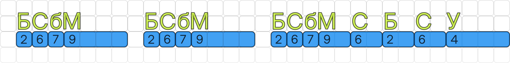
и еще + 1 клавишу вправо.
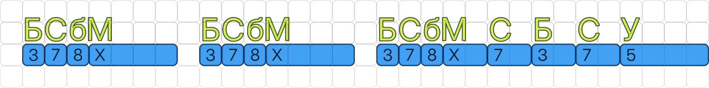
Сыграй все три варианта, слушай внимательно. Не спеши.
Что изменилось? А что осталось тем же?
Мелодия остается той же.
Вопрос:
Что остаётся неизменным в этих четырёх нотах (0, 4, 5, 7 или 3, 7, 8, X), из-за чего мы слышим одну и ту же мелодию? Время пошло.
Ответ:
Расстояния между нотами.
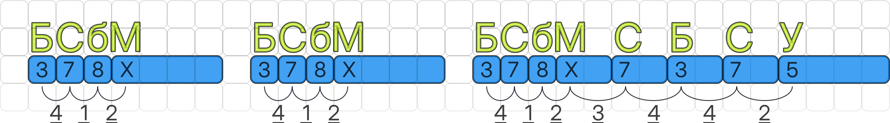
Расстояние — это количество клавиш от начальной до конечной, без учёта начальной.
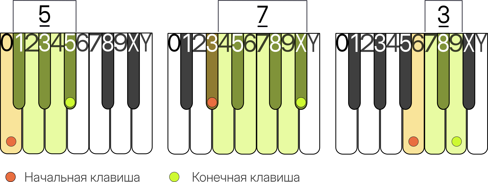
В качестве примера:
Расстояние от клавиши 0 до клавиши 5 - 5;
Расстояние от клавиши 3 до клавиши X - 7;
Расстояние от клавиши 6 до клавиши 9 - 3.
Нота сама по себе фиксирует одну точку звучания. Музыкальный смысл возникает при переходе от одной ноты к другой или при их одновременном звучании.
Расстояние имеет направление и характер. Оно создаёт движение мелодии и различается по степени напряжения и устойчивости. Чередование и сочетание расстояний определяет идею и настроение музыки.
Всего существует 12 расстояний, и записываются они знаком с подчёркиванием:
1, 2, 3, 4, 5, 6, 7, 8, 9, X, Y, 0.
Расстояния отличаются по длине:
- Короткие расстояния: 1, 2, 3, 4, 5
- 6 — граница, середина внутри цикла
- Длинные расстояния: 7, 8, 9, X, Y
по направлению:
- восходящие - считаются от начальной клавиши вправо
- нисходящие
Умение распознавать расстояния — ключевой навык. Он помогает разбирать музыку и импровизировать. Если у каждого расстояния есть своя ассоциация, распознавание становится значительно проще.
Заполни таблицу ассоциаций для всех расстояний в Play12: Практикум.
С опытом распознавание расстояний становится проще. Ты начнёшь замечать их в знакомых мелодиях и различать на слух. Со временем появятся «любимые» расстояния — те, которые встречаются чаще и легче узнаются. Главное — ты начнёшь слышать их не только по отдельности, но и в сочетаниях.
Следующий шаг — аккорды.
Глава 6. Аккорды.
Аккорд — это комбинация двух и более расстояний.
Просто посмотри это 4 Chords | Music Videos | The Axis Of Awesome
Вот эти четыре аккорда.
Поиграй эти аккорды, попробуй напеть одну из этих песен. Посмотри на них внимательно и послушай, как они звучат.
Задача:
один аккорд отличается от остальных. Определи какой и почему.
Подсказка:
обрати внимание на расстояния.
Ответ:
у первого, второго и четвёртого аккорда расстояния от первой клавиши — 4 и 7,
а у третьего — 3 и 7.
Сыграй эти аккорды друг за другом. Почувствуй разницу.

Вспомни различие между расстояниями 3 и 4 из главы 5 - именно разница в этих расстояниях меняет звучание аккорда.
В музыке есть две базовые формы аккордов. В системе Play12 они записываются так:
[0]37 и [0]47.
В квадратных скобках обозначается клавиша от которой считаются расстояния.
Пример:
аккорд [5]47
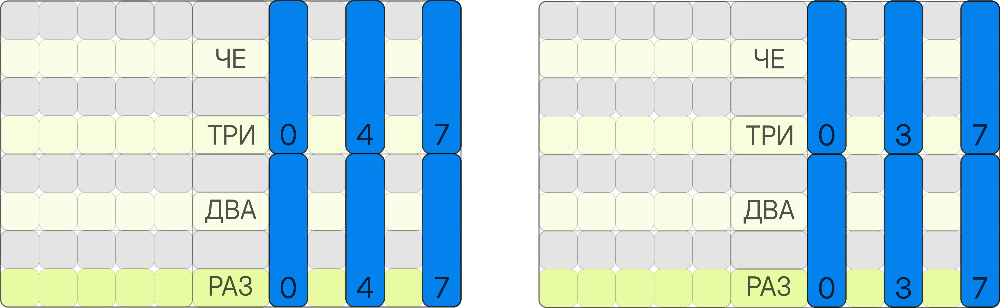
1. Найди клавишу [5].
2. Отсчитай от нее 4.
3. Отсчитай от нее 7.
4. Сыграй три клавиши вместе.
Построй [8]37 по тому же принципу.
От любой из 12 нот можно строить базовые формы 37 и 47. Меняется точка отсчёта, но структура остаётся той же.
Сыграй короткие последовательности:
[0]47 → [7]47 → [5]47
[0]37 → [5]37 → [8]37
Считай вслух и слушай, как меняется звучание. Сыграй так же и последовательность аккорда из видео:
[0]47 → [7]47 → [9]37 → [5]47
Если играть аккорды подряд, они образуют музыкальную основу, к которой можно добавить голос — и получится песня. Сыграй и попробуй напеть - а мелодия тебе уже знакома.
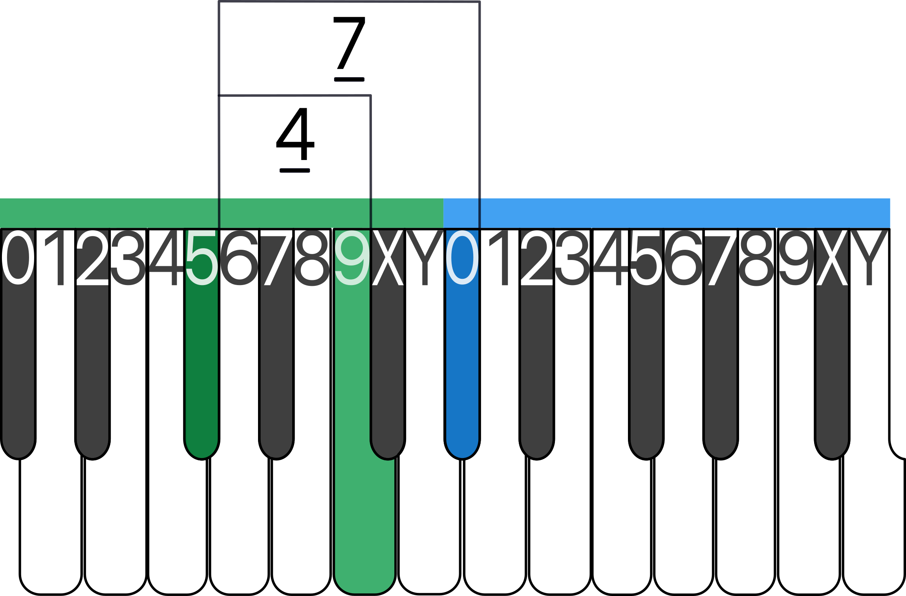
When the Saints go Marching
[0]47
O when the saints go marchin' in,
[0]47 [7]47
O when the saints go marchin' in,
[0]47 [0]479 [5]47 [5]479
Lord, I want to be in that number
[0]47 [7]479 [0]47
When the saints go marchin' in.
В Play12 аккорды можно записывать не только на поле, но и короткой записью. Такая запись помогает быстро читать и играть аккомпанемент.
Чтобы свободно читать и строить аккорды, нужно понять, как они устроены. В Play12 аккорд можно рассматривать как конструктор.
Глава 7. Конструктор аккорда в Play12.
Строить аккорды в Play12 очень просто, для построения аккорда тебе понадобится 4 элемента:
- опора
- основа
- внутреннее расстояние
- внешнее расстояние
Каждый элемент влияет на форму и звучание аккорда. Когда элемент меняется или добавляется, меняется и сам аккорд. Это можно услышать. Сыграй и послушай эти последовательности. Обрати внимание, как меняется звучание по мере добавления или замены элементов.
[0]27 → [0]37 → [0]47 → [0]57
[0]479 → [0]47X → [0]47Y
Рассмотрим каждый элемент конструктора на примере аккорда [5]479:
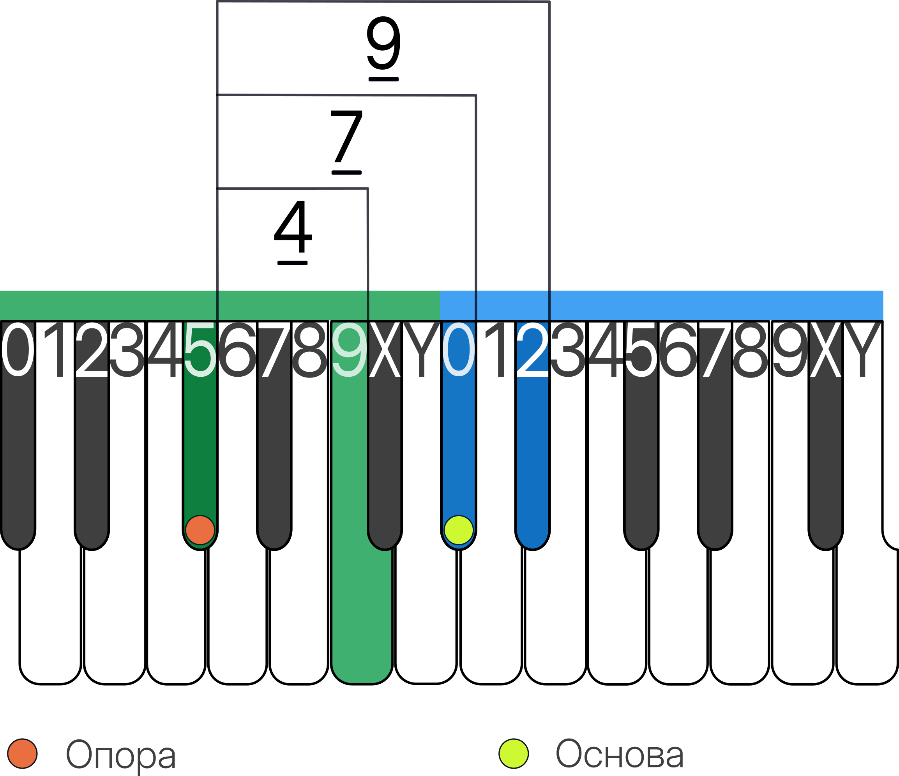
[5]479
[5] - Опора.
4 - Внутреннее расстояние.
7 - Основа.
9 - Внешнее расстояние.
Опора
Это клавиша, от которой считаются все расстояния. Обозначается знаком клавиши в квадратных скобках.
Основа
Это расстояние, которое вместе с опорой формирует каркас аккорда. В зависимости от основы аккорды бывают узкими, стандартными и широкими.
6 — узкая основа
7 — стандартная основа
8 — широкая основа
Внутренние расстояния
Это формообразующий элемент. Они находятся между опорой и основой. Внутренние расстояния определяют базовую форму аккорда. Если внутренних расстояний нет, базовая форма не возникает.
3, 4 — базовые формы
2, 5 — дополнительные варианты
1, 6 — редкие варианты
Внешние расстояния
Они находятся за пределами каркаса аккорда и добавляют дополнительные оттенки звучания.
Как читать код аккорда:
Когда ты видишь код аккорда, разбирай его по элементам.
Пример: [5]479
Шаг 1. Найди опору
Это клавиша, от которой строится аккорд. Клавиша 5
Шаг 2. Найди основу
Ищи в коде основу — это 7, 6 или 8.
Если есть 7 — это стандартная основа.
Если 7 нет — ищи 6 или 8.
В данном аккорде:
7 — основа
5 + 7 = 0 → клавиша 0
Шаг 3. Найди внутренние расстояния
Значения меньше основы — это внутренние расстояния.
В данном аккорде:
4 — внутреннее расстояние
5 + 4 = 9 → клавиша 9
Шаг 4. Найди внешние расстояния
Значения больше основы — это внешние расстояния.
В данном аккорде:
9 — внешнее расстояние
5 + 9 = 2 → клавиша 2
В результате для аккорда [5]479 тебе нужны клавиши:
5, 0, 9, 2
Важно!
Код показывает, от какой клавиши строится аккорд и какие расстояния нужно построить. При вычислении этих расстояний ты получаешь клавиши, из которых состоит аккорд.
Ты можешь сыграть любой порядок клавиш:
5 0 9 2
0 9 2 5
9 2 5 0
2 5 0 9
Это один и тот же аккорд [5]479.
код не задаёт порядок клавиш.
Подробно о том, как выбирать порядок клавиш, — в следующей главе.
Глава 8. Порядок клавиш в аккорде.
Вернемся к тем первым 4 аккордам из главы 6:
[0]47 → [7]47 → [9]37 → [5]47
Добавь бас в левой руке. Сыграй эту последовательность.

Сконцентрируйся на ощущениях и отметь:
- на что направлено основное внимание
- какое действие требует максимальной концентрации
- что кажется самым сложным
Теперь сыграй те же аккорды ещё раз, но попробуй изменить порядок клавиш внутри аккордов.

Поиграй. Дай руке привыкнуть. Когда начнёт получаться играть подряд без остановки — ответь:
Что изменилось?
Рассмотрим аккорд [7]47. Он состоит из клавиш 7 Y 2. Эти клавиши можно сыграть в разном порядке:
Y 2 7
2 7 Y
7 Y 2
Возможность менять порядок клавиш позволяет управлять переходом между аккордами. Ты можешь выбрать такой вариант, который:
— минимизирует движение руки
— снижает количество ошибок
— позволяет играть быстрее
— уменьшает напряжение
Рассмотрим переход [0]47 → [7]47:
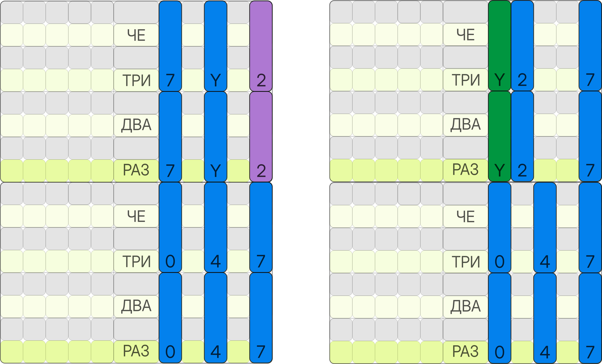
Сыграй оба перехода.
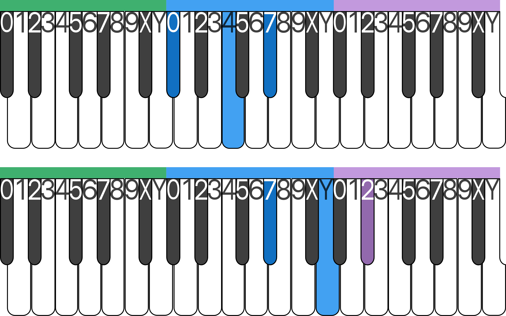
В первом случае:
- тебе приходится переносить всю кисть на +7
- возникает большой разрыв между аккордами
- движение становится резким
Второй переход:
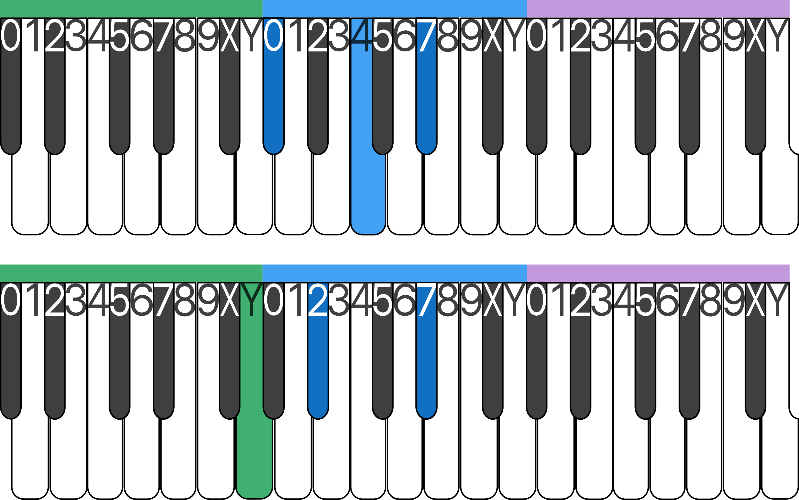
В этом случае:
- рука почти не смещается
- самое большое движение — всего на 2 шага
- переход становится плавным
Сравни эти два варианта и выбери тот, в котором тебе легче играть подряд без остановки.
Подсказка. Пока ты только осваиваешь этот навык, можно использовать ориентир:
[7]47
Цветом выделено расстояние, с клавиши которого удобно начинать аккорд. Если все знаки одного цвета - строй аккорд от опоры.
И вот так выглядят уже любимые аккорды:
[0]47 → [7]47 → [9]37 → [5]47
Так это выглядит в песне Let it be - The Beatles:
[0]47 [7]47 [9]37
When I find myself in times of trouble
[5]47
Mother Mary comes to me
В большинстве случаев аккорды играют правой рукой, а левая рука играет бас. Если бас отдельно не указан, левая рука играет ту же клавишу, что и опора, но на цикл левее.
Пример: если опоры аккордов — [0],[7], то бас — тоже клавиши 0 и 7, но на цикл ниже:
[0]47 → [7]47
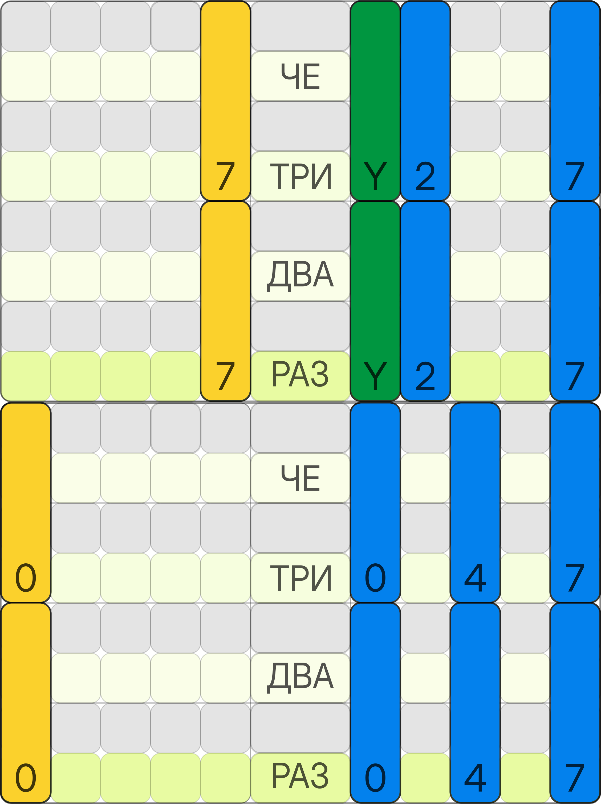
Иногда бас отличается от опоры. В этом случае бас указывается отдельно:
(Y)[7]47
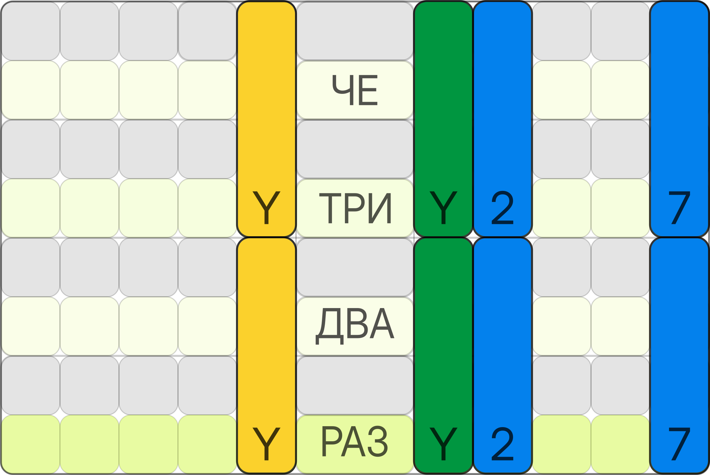
А так это выглядит в песне Youʼre Beautiful - James Blunt:
Instrumental: [0]47 | (Y)[7]57 | [9]37X | [5]47 [5]247*
*Горизонтальные линии показывают длительность аккордов. Подробно — в Блоке 3.
[0]47
My life is brilliant,
(Y)[7]257
My love is pure.
[9]37X
I saw an angel,
[5]47 [5]247
Of that I’m sure.
Когда ты освоишь аккорды - ты перестанешь “повторять музыку”, ты начнёшь управлять ею. Одна и та же песня больше не будет звучать одинаково. Ты сможешь сыграть её нежно или резко, просто или насыщенно, спокойно или с напряжением. Музыка перестаёт быть фиксированной записью - она становится материалом, с которым ты работаешь. У тебя появятся “любимые” нули, клавиши от которых удобнее петь или строить сложные аккорды. А потом и многие последовательности аккордов начнут запоминаться, появится особое “виденье” - ты станешь “предвидеть” следующий аккорд, чувствовать направление.
Аккорды — это не про заучивание. Это про свободу выбора: какие клавиши взять, в каком порядке их сыграть, как перейти к следующему аккорду, где упростить, а где усилить звучание - именно здесь появляется твой стиль. Но это не происходит сразу. Это результат практики. Большого количества повторений. Очень много повторений. За любым уверенным исполнением стоит множество ошибок и ещё большее количество попыток. Каждый раз, когда ты играешь аккорды: рука начинает запоминать удобные варианты, движения становятся увереннее, переходы — точнее, а звук — связнее. Ты постепенно перестаёшь думать о клавишах и начинаешь слышать результат.
В начале тебе поможет простой инструмент — таблица аккордов. Ты можешь распечатать её или открыть с телефона.
qr-код на таблицу аккордов.
Таблица аккордов
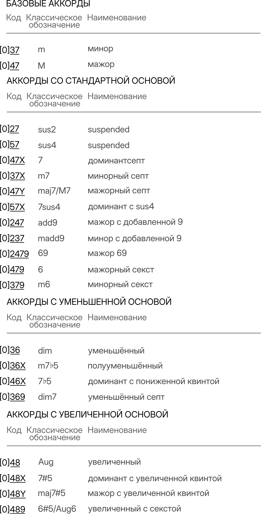
БЛОК 3. РИТМ.
Введение.
Музыка = комбинации клавиш + ритм.
Ритм — это управление временем в музыке, это то, как ты используешь комбинации клавиш:
когда нажимаешь
сколько держишь
когда отпускаешь
и где оставляешь тишину
В этом блоке ты:
разберёшься, что такое пульс
научишься считать его разными способами
узнаешь, как делить счёт на шаги
поймёшь, как работают акценты
освоишь дробление счёта на 2 и на 3 шага
Будет непросто. Появится много новых понятий, некоторые из них сначала будут казаться похожими друг на друга. Ритм нужно не только понять, но и почувствовать. Ритм осваивается через практику: через счёт, движение, повторение и повторение и повторение.
Для этого придерживайся четырёх правил:
● Считай вслух
Счёт вслух даёт контроль над временем и помогает точно чувствовать ритм. Это не признак отсутствия опыта, а профессиональный инструмент.
● Делай сложное простым
Разбивай сложные движения и ритмы на короткие понятные действия.
● Начинай медленно
Сначала — точно, потом — быстро. Медленный темп помогает почувствовать и запомнить правильные движения.
● Используй метроном
Метроном задаёт ровный пульс и помогает удерживать темп без ускорений и провалов.
Начинаем.
Глава 9. Пульс.
Пульс — это равномерная последовательность повторяющихся ударов. Сначала просто послушай пульс - включи метроном. ( https://share.google/qHpI2K7FYoDgGxjrx)
Метроном — это инструмент, который задаёт ровный пульс в выбранном темпе. Скорость пульса — это темп музыки. Он измеряется в BPM (Beats Per Minute — ударов в минуту).
BPM = 60 означает 60 ударов в минуту — один удар в секунду.
BPM = 120 — два удара в секунду.
Чем выше BPM, тем быстрее темп.
Настрой метроном на BPM = 60. Хлопай на каждый сигнал метронома и считай вслух:
РАЗ
РАЗ
РАЗ
РАЗ
Повтори упражнение на BPM = 90 и BPM = 120. Выполняй упражнение 1 минуту на каждом BPM.
Теперь посмотри, как выглядит пульс. Представь время в виде прямой линии, а сигналы метронома — в виде точек на ней:
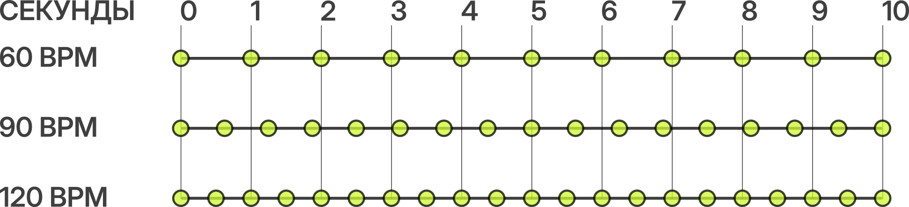
При 60 BPM метроном подаёт один сигнал в секунду, а при 120 - два.
Но пульс важно не только слышать и видеть — его нужно почувствовать телом.
Чувствовать пульс — врождённое умение человека. Мозг автоматически распознаёт ритм, начинает предугадывать и ждать следующий удар.
Вот знакомая ситуация:
Светофор замигал — ты ускоряешь шаг, чтобы успеть перейти дорогу.
Только вместо светофора включи метроном BPM = 60. Пройдись по комнате или просто шагай на месте:
сначала в течение минуты шагай на каждый удар метронома.
Потом ускорься — два шага на каждый удар.
Продолжай упражнение не меньше минуты. Через некоторое время тело начнёт само попадать в пульс.
Слышать, видеть и чувствовать пульс — необходимое условие для того, чтобы научиться его считать. С чего начать счёт? Конечно же — с РАЗ.
Глава 10. Счёт.
Пульс можно слышать, видеть и чувствовать. Теперь ты научишься его считать.
Пульс — это одинаковые удары через одинаковое время. Но считать пульс можно по-разному: объединять удары в небольшие повторяющиеся группы. В Play12 такие группы называются раундами.
Начнём с самого простого варианта — раунд по два удара. Включи метроном. BPM = 60
Встань.
Считай вслух и делай шаг на каждый РАЗ,
на слово «два» — не шагай.
РАЗ два
РАЗ два
РАЗ два
РАЗ два
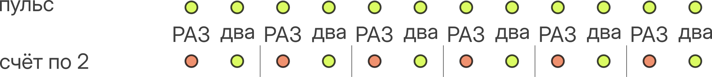
Продолжай выполнять упражнение 1 минуту. Теперь остановись и подумай: какой удар ощущался сильнее?
Любой раунд начинается с РАЗ.
РАЗ — это естественный акцент. Мозг выделяет начало раунда и помогает удерживать счёт. Как в аккордах у тебя была опора — клавиша, от которой строился аккорд, так в ритме такой опорой становится РАЗ.
Ты только что считал пульс раундами по два удара. Такой счёт ощущается естественно: шаг, марш, движение вперёд. Не случайно маршевый ритм построен именно на этом счёте.
Но пульс можно считать не только группами по 2 удара. Попробуем тот же самый пульс считать по 3 удара. Теперь в раунде будет 3 удара.
Счёт по 3
Включи метроном. BPM = 60
Встань.
Считай вслух.
На каждый РАЗ делай шаг.
На слова «два» и «три» — не шагай.
РАЗ два три
РАЗ два три
РАЗ два три
РАЗ два три
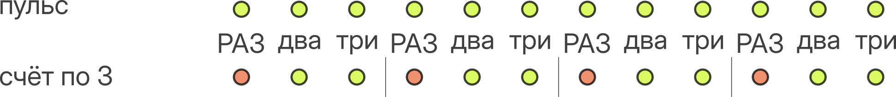
Продолжай не меньше минуты.
Стало ощущаться по-другому? Такой счёт воспринимается менее “маршевым” и более плавным.
Не случайно многие вальсы построены именно на счёте по 3.
Самое важное:
Одни и те же удары.
Разный счёт.
Другая музыка.
Включи метроном. BPM = 60
Посчитай 6 раундов по ДВА, и сразу 4 раунда по ТРИ:
РАЗ два
РАЗ два
РАЗ два
РАЗ два
РАЗ два
РАЗ два
РАЗ два три
РАЗ два три
РАЗ два три
РАЗ два три
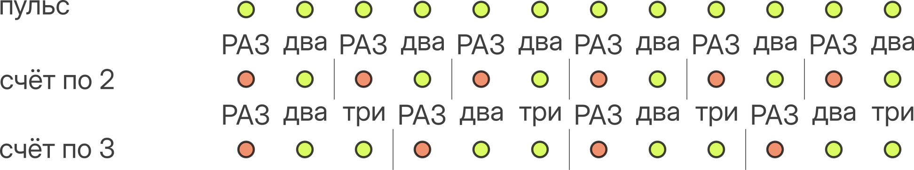
Попробуй посчитать поверх реальной музыки, не торопись, послушай. Дай себе почувствовать ритм.
Счёт группами по 2:
The White Stripes - Seven Nation Army
Miley Cyrus - Flowers
Felix Mendelssohn - Wedding March from "A Midsummer Night's Dream"
Счёт группами по 3:
R.E.M. - Everybody Hurts
Ed Sheeran - Perfect
Pyotr Tchaikovsky — Waltz of the Flowers
Счёт на 2 и 3 — основа ритма.
Так же как в Блоке 2 ты узнал две базовые формы аккордов — 37 и 47, в ритме есть две базовые формы счёта:
на 2 и на 3.
Большинство ритмов можно собрать из двоек и троек:
4 = 2 + 2
5 = 3 + 2 или 2 + 3
6 = 3 + 3 или 2 + 2 + 2
7 = 3 + 2 + 2 или 2 + 2 + 3
Но есть важная деталь. Внутри собранного раунда появляется ещё РАЗ. Не такой же опорный, как первый РАЗ. Более слабый. Именно он превращает простой счёт в настоящий ритм. В следующей главе разберёмся, как это работает.
Глава 11. Внутренние акценты.
Включи “Truly Madly Deeply” группы Savage Garden. Она в удобном темпе. Начнём с счёта по ДВА:
Встань.
Считай вслух.
На каждый РАЗ делай шаг (ТОП),
на каждый два хлопок в ладоши (хлоп).
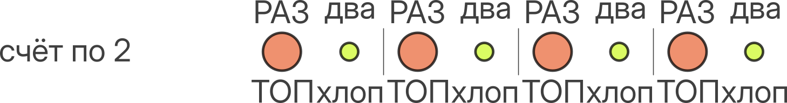
Делай так куплет и припев. Старайся ТОПать и ХЛОПать вместе со звуком ударных. Если легко, можешь подпевать.
Сейчас будешь считать по ЧЕтыре. Это как 2 + 2, и у тебя это уже получается. Только добавляется ещё одно движение — ШЛЁП, удар ладонью по бедру.
Встань.
Считай вслух.
На каждый РАЗ делай шаг (ТОП)
На каждый два хлопок в ладоши (хлоп)
На каждый ТРИ хлопок по бедру (ШЛЁП)
На каждый четыре хлопок в ладоши (хлоп)
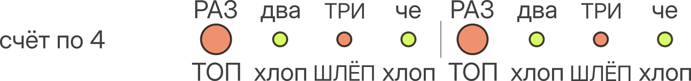
Играй ритм ещё куплет и припев. Не думай о музыке. Просто двигайся вместе с ней:
ТОП — хлоп — ШЛЁП — хлоп —
ТОП — хлоп — ШЛЁП — хлоп
Какой удар после РАЗ ощущается более сильным? Скорее всего — ТРИ. При счёте по четыре в одном раунде помещаются два счёта по два:
РАЗ два | РАЗ два
становится:
РАЗ два ТРИ че
РАЗ остаётся главным акцентом всего раунда. ТРИ становится внутренним акцентом. Он слабее РАЗ, но сильнее, чем два и четыре. Именно внутренние акценты помогают чувствовать длинные раунды и не теряться внутри них.
Прежде чем начнёшь считать по 5 давай зафиксируем три степени акцента:
Сильный - РАЗ - в начале раунда - ТОП
Средний - внутри раунда - ШЛЁП
Слабый - обычный удар - хлоп
Акцентов в музыке больше, но сейчас для понимания ритма, этих трёх будет достаточно.
Счёт по 5.
Счёт по 5 можно считать двумя способами: 2 + 3 и 3 + 2. Начнём с 3 + 2.
Включи метроном. BPM = 60
Постарайся почувствовать телом смену качающейся тройки на прямую двойку:
Встань.
Считай вслух.
На каждый РАЗ - Сильный - делай шаг (ТОП)
На каждый два - Слабый - хлопок в ладоши (хлоп)
На каждый три - Слабый - хлопок в ладоши (хлоп)
На каждый ЧЕ - Средний - хлопок по бедру (ШЛЁП)
На каждый пять - Слабый - хлопок в ладоши (хлоп)
ТОП — хлоп — хлоп — ШЛЁП — хлоп
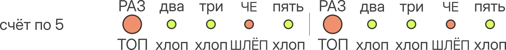
Считай так 2 минуты. Не спеши. Убедись, что тело запомнило этот ритм. Это 3 + 2. Вальс + марш.
Включи “Take Five” The Dave Brubeck Quartet. Послушай этот счёт по 5. Посчитай 3 + 2. Может не получится, музыкальные инструменты будут сбивать, так бывает. С опытом умение считать поверх композиций придёт.
Но считать по 5 можно и по-другому: 2 + 3. Марш + вальс.
Включи метроном. BPM = 60
Встань.
Считай вслух.
На каждый РАЗ - Сильный - делай шаг (ТОП)
На каждый два - Слабый - хлопок в ладоши (хлоп)
На каждый ТРИ - Средний - хлопок по бедру (ШЛЁП)
На каждый че - Слабый - хлопок в ладоши (хлоп)
На каждый пять - Слабый - хлопок в ладоши (хлоп)
Считай так 2 минуты. Видишь? Всё выполнимо - послушай Main Title Theme (OST MISSION: IMPOSSIBLE) Artie Kane/Danny Elfman. В этой музыке используется счёт 2 + 3 — марш + вальс. Попробуй считать поверх музыки.
А теперь включи метроном. Посчитай несколько раундов 3 + 2, а затем несколько раундов 2 + 3:
РАЗ два три ЧЕ пять
РАЗ два ТРИ че пять
РАЗ два три ЧЕ пять
РАЗ два ТРИ че пять
Твоя главная цель — почувствовать, как меняется ощущение ритма при смене внутреннего акцента. Ударов остаётся пять. Меняется только положение ШЛЁПа, а вместе с ним меняется и характер движения.
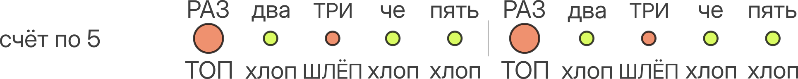
Считать можно по 6, 7, 8, 9 и больше. Принципы остаются теми же, что и при счёте на 4 и 5. Большие раунды собираются из двоек и троек. Внутренние акценты делят их на более короткие и удобные части. Чтобы понять структуру ритма, найди главный РАЗ и внутренние акценты.
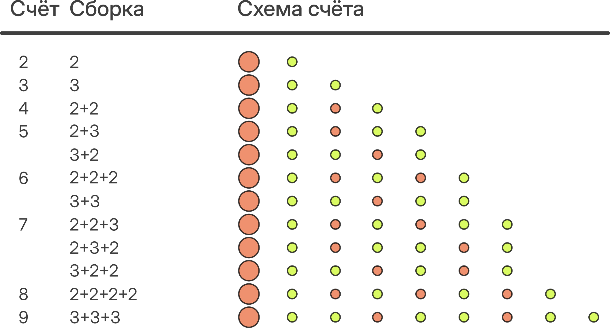
Счёт можно собирать разными способами.Например:
8 = 2 + 2 + 2 + 2
8 = 3 + 3 + 2
8 = 2 + 3 + 3
8 = 3 + 2 + 3
Главный принцип:
1. Найти главный РАЗ.
2. Найти внутренние акценты.
Именно они показывают, как устроен ритм.
На поле Play12 насыщенность цвета шага и рамки укажет тебе на внутренний акцент:
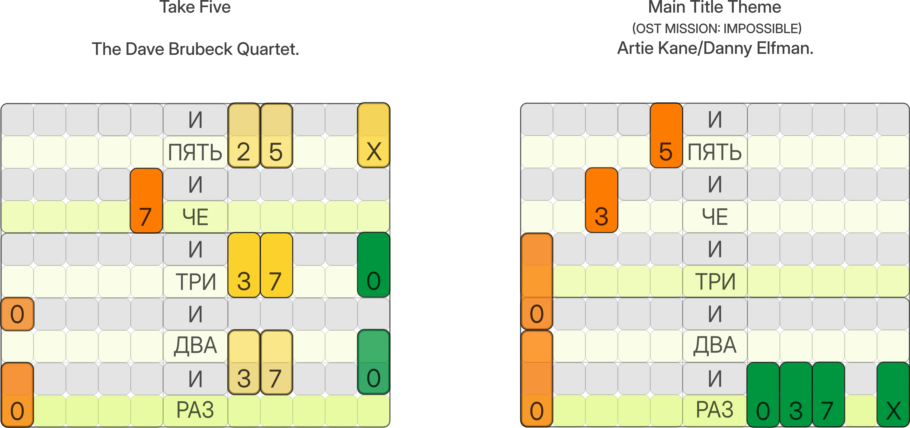
Ритм — это не просто количество ударов. Одни и те же удары можно организовать по-разному. Именно положение внутренних акцентов создаёт характер движения музыки.
Следующий шаг — научиться делить каждый счёт на более мелкие части — шаги.
Глава 12. Дробление счёта на шаги.
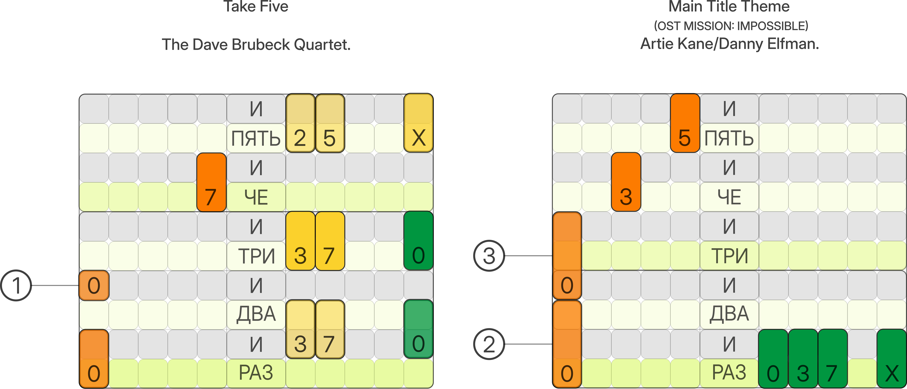
Из Главы 3 ты уже знаешь, что нота не обязана начинаться и заканчиваться вместе со счётом.
Она может длиться меньше счёта (1)
Может длиться больше счёта (2)
А может начинаться между счётами (3).
Чтобы точно находить такие места, каждый счёт делится на шаги. Ты уже встречал самый простой вариант такого дробления:
РАЗ И
ДВА И
ТРИ И
ЧЕ И
Здесь номер счёта обозначает первый шаг, а И — второй.
Включи метроном. BPM = 60.
Счёт на 6.
Считай вслух.
На каждый сигнал метронома произноси номер счёта.
Между сигналами произноси И.
РАЗ И
два И
три И
ЧЕ И
пять И
шесть И
Считай 30 секунд. Добавь хлопки по бедру на каждый счёт и на каждое “И”. Считай ещё 30 секунд.
Пульс изменился? Нет. Пульс остался тем же. Мы просто разделили каждый счёт на два шага. Счёт можно делить не только на два шага, но и на три, тогда шаги обозначаются так:
РАЗ И А
ДВА И А
ТРИ И А
ЧЕ И А
Давай пробовать считать. BPM = 60. Счёт на 6. Считай вслух. На каждый сигнал метронома произноси номер счёта. Между сигналами произноси И и А.
РАЗ И А
два И А
три И А
ЧЕ И А
пять И А
шесть И А
Считай 30 секунд. Добавь хлопки по бедру на каждый шаг:
РАЗ, И и А.
Считай ещё 30 секунд.
Пульс всё ещё тот же. Мы просто разделили каждый счёт на три шага вместо двух. Но ощущение стало другим. Опиши разницу вслух, себе. Зафиксируй её для себя.
Деление счёта на три шага часто используется там, где общий ритм остаётся ровным и прямым.
Из-за этого в музыке может возникать интересное сочетание: одна рука играет ровное деление на 2, а другая — качающееся деление на 3.
Это сложнее, чем просто считать вслух. Не переживай, если сразу не получится. Такое ощущение требует времени, внимания и большого количества повторений.
Для начала попробуй просто переключаться между двумя видами дробления под метроном:
РАЗ И
ДВА И
ТРИ И
ЧЕ И
РАЗ И А
ДВА И А
ТРИ И А
ЧЕ И А
Деление счёта на 2 и 3 шага требует времени и практики. Не переживай, если сначала получается медленно или вовсе ничего не получается. В Play12 Practice достаточно упражнений для тренировки этого навыка. Чем увереннее ты чувствуешь шаги внутри счёта, тем проще тебе будет играть сложные и дроблёные ритмы.
На поле Play12 ты легко определишь дробление на 3.
Перед тобой фрагмент из Piano Man.
Здесь счёт на 4 сменяется счётом на 3 (1). Есть места, где один счёт делится на три равные части и каждая нота занимает одну часть (2). А есть места, где одна нота занимает две части счёта, а следующая — только одну (3). Эти и подобные варинанты подробно и неоднократно разбираются в Play12 Practice.
Это сложный ритм и яркое вступление. Но к этому моменту ты уже знаешь всё необходимое для его чтения. Ты умеешь вести счёт на 3 и на 4, понимаешь, какие клавиши нужно нажимать, когда это делать и сколько времени удерживать их нажатыми. Ты знаешь, как с помощью «И» и «А» дробить счёт и определять положение нот внутри него. Теперь остаётся практика. Считай вслух, играй медленно и постепенно увеличивай темп. Всё необходимое для освоения этого фрагмента у тебя уже есть.

ЧТО ДАЛЬШЕ?
Play12 Инструкция. Уровень 1
Поздравляю. Ты прошёл весь Play12 Инструкция У.1
Возможно, сейчас тебе кажется, что ты всё ещё знаешь слишком мало. И это нормально.
Но давай посмотрим, что у тебя уже есть.
✅ Знаешь все 12 нот музыкального цикла. ✅ Находишь их на клавиатуре. ✅ Понимаешь, как устроена запись нот на поле в Play12. ✅ Строишь интервалы и аккорды. ✅ Считаешь пульс на разный счёт с акцентами. ✅ Дробишь счёт на шаги и читаешь сложные ритмические рисунки.
Это намного больше, чем знают большинство людей, которые только мечтают научиться играть. Но самое важное — музыка перестала быть набором загадочных символов. Теперь ты понимаешь её логику. Она стала системой, которую можно изучать шаг за шагом.
Добро пожаловать в самую важную часть обучения.
Практику.
Музыку невозможно освоить чтением, пониманием или прослушиванием. Музыку можно освоить только через игру.
Играй каждый день.
Даже 10, 15 минут регулярной практики полезнее, чем несколько часов один раз в неделю.
Разбирай песни.
Не бойся сложных произведений. Любая большая композиция состоит из маленьких частей.
Считай вслух. Играй медленно.
Не спеши увеличивать темп. Скорость приходит сама, когда движения становятся уверенными.
Возвращайся к этому материалу.
Со временем ты будешь замечать вещи, которые раньше проходили мимо внимания. Так работает обучение.
Play12 Практика
Play12 Инструкция У.1 даёт тебе фундамент.
Play12 Практика помогает превратить знания в навык.
В нём собраны упражнения для развития техники, чувства ритма, координации рук и уверенного чтения записей Play12. Внимательно следуй инструкциям и всё получится.
Здесь теория превращается в практику.
Play12 Инструкция Уровень 2
После того как базовые навыки станут уверенными, можно переходить дальше.
В Play12 Инструкция У.2 тебя ждут новые аккорды и логика построения их последовательностей, более сложные ритмы, дополнительные способы сопровождения и музыкальные приёмы, которые постоянно встречаются в современной музыке.
Но не торопись. Сейчас самое важное — начать играть.
Сделай первый шаг.
Потом второй.
Потом ещё один.
И однажды ты поймаешь себя на мысли, что играешь музыку, о которой раньше только мечтал.
Увидимся в Play12 Практикум. Твой друг, Решетняк Роман